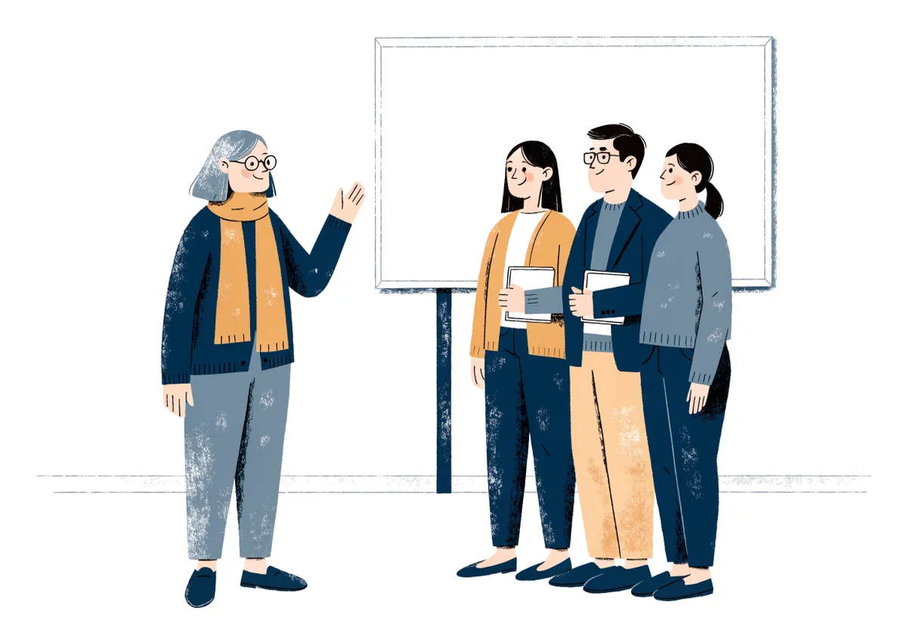
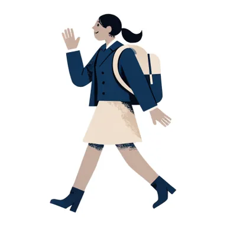
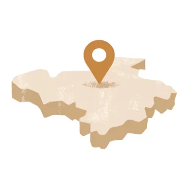

배우기 전에 먼저 해 보세요. 틀려도 괜찮아요.
처음 만난 회사 동료나 선생님에게 이름을 물을 때는 어떻게 말할까요?
처음 만난 어른에게는 Sie를 써요. du는 가족과 친구, 서로 그렇게 부르기로 한 사이에 써요.
한국에서 왔다고 말하고 싶어요. 알맞은 문장은 무엇일까요?
kommen aus가 '~에서 오다'예요.

프랑크푸르트의 어학원, 독일어 수업 첫날이에요. 한국에서 온 Jiu, Dohyun, Sora가 처음 만나 인사하고 자기를 소개해요.
문법 sein, heißen, kommen, wohnen (ich, du, Sie), W-Fragen: Wie? Woher? Wo?, Alphabet
과제대학어학 수업 첫날 옆 사람과 서로 소개하기
과제직장첫 출근 날 동료에게 나를 소개하기
이 과를 마치면 처음 만난 사람에게 인사하고 이름, 나라, 사는 곳을 말할 수 있어요.
이 과에서 쓸 말이에요. 눌러서 먼저 들어 보세요.
배우기 전에 먼저 해 보세요. 틀려도 괜찮아요.
처음 만난 회사 동료나 선생님에게 이름을 물을 때는 어떻게 말할까요?
처음 만난 어른에게는 Sie를 써요. du는 가족과 친구, 서로 그렇게 부르기로 한 사이에 써요.
한국에서 왔다고 말하고 싶어요. 알맞은 문장은 무엇일까요?
kommen aus가 '~에서 오다'예요.
월요일 아침, 어학원 교실이에요. 독일어 수업 첫날, Frau Becker가 수강생들과 인사해요.
들으면서 찾아보세요. Dohyun은 어디에 사나요?
쉬는 시간이에요. Jiu와 Dohyun이 커피 자판기 앞에서 이야기해요.
들으면서 찾아보세요. 두 사람은 서로 du라고 하나요, Sie라고 하나요?
다음 날 아침, Dohyun의 첫 출근 날이에요. 팀장 Frau Hoffmann이 동료 Markus를 소개해요.
들으면서 찾아보세요. Markus는 어디에서 왔나요?
세 대화를 듣고 답하세요.
Jiu는 어디에서 왔나요?
Dohyun은 프랑크푸르트의 어느 동네에 사나요?
대화 A에서 Frau Becker와 수강생들은 서로 무엇을 썼나요?
선생님과 성인 수강생은 처음에 보통 Sie를 써요.
대화 B에서 Jiu와 Dohyun은 서로 무엇을 썼나요?
같은 수업을 듣는 사람끼리는 보통 du를 써요.
대화 C에서 du라고 하자고 먼저 말한 사람은 누구인가요?
Markus: Ich komme aus Frankfurt.
Markus는 함부르크 출신이고, 지금 프랑크푸르트에 살아요.
Sora: Ich wohne in Frankfurt.
낱말 36개예요. 낱말이나 예문 앞의 단추를 누르면 소리가 나요. 명사는 der, die, das를 색으로 구분했어요.
Hallo! 안녕하세요 (편한 인사)
Hallo, Jiu!안녕하세요, 지우 씨!
Guten Morgen! 좋은 아침이에요 (아침 인사)
Guten Morgen, Frau Becker!좋은 아침이에요, Frau Becker!
Guten Tag! 안녕하세요 (낮 인사)
Guten Tag, Herr Park!안녕하세요, Herr Park!
Guten Abend! 안녕하세요 (저녁 인사)
Guten Abend, Frau Lee!안녕하세요, Frau Lee!
Auf Wiedersehen! 안녕히 가세요, 안녕히 계세요
Auf Wiedersehen, Frau Hoffmann!안녕히 계세요, Frau Hoffmann!

Tschüss! 잘 가요, 잘 있어요 (편한 인사)
Tschüss, Dohyun!잘 가요, 도현 씨!
Bis morgen! 내일 봐요
Tschüss, bis morgen!잘 가요, 내일 봐요!
Freut mich! 반가워요
Ich bin Sora Lee. – Freut mich!저는 이소라예요. – 반가워요!
Willkommen! 환영해요
Willkommen in Frankfurt!프랑크푸르트에 오신 것을 환영해요!
heißen 이름이 ~이다
Ich heiße Jiu Kim.저는 김지우예요.
kommen 오다
Ich komme aus Korea.저는 한국에서 왔어요.
wohnen 살다
Ich wohne in Frankfurt.저는 프랑크푸르트에 살아요.
sein ~이다
Ich bin Dohyun.저는 도현이에요.
der Name, die Namen 이름, 성명
Mein Name ist Dohyun Park.제 이름은 박도현이에요.
der Vorname, die Vornamen 이름 (성을 뺀 이름)
Mein Vorname ist Jiu.제 이름은 Jiu예요.
der Nachname, die Nachnamen 성
Mein Nachname ist Kim.제 성은 Kim이에요.

das Land, die Länder 나라
Korea ist ein Land in Asien.한국은 아시아에 있는 나라예요.
die Stadt, die Städte 도시
Frankfurt ist eine Stadt in Deutschland.프랑크푸르트는 독일에 있는 도시예요.
der Kurs, die Kurse 수업, 강좌
Willkommen im Kurs!수업에 오신 것을 환영해요!
der Kollege, die Kollegen 동료 (남자)
Das ist Markus, ein Kollege.이쪽은 동료 Markus예요.
die Kollegin, die Kolleginnen 동료 (여자)
Das ist Frau Schulz, eine Kollegin.이쪽은 동료 Frau Schulz예요.
buchstabieren 철자를 하나씩 말하다
Ich buchstabiere: K, I, M.철자를 불러 드릴게요. K, I, M.
wie 어떻게
Wie heißen Sie?성함이 어떻게 되세요?
woher 어디에서
Woher kommst du?어디에서 왔어요?
wo 어디에
Wo wohnen Sie?어디에 사세요?
wer 누구
Wer ist das? – Das ist Markus.저 사람은 누구예요? – Markus예요.
und 그리고
Ich bin Dohyun. Und du?저는 도현이에요. 그쪽은요?
auch ~도
Ich komme auch aus Korea.저도 한국에서 왔어요.
aber 그렇지만
Ich komme aus Hamburg. Aber ich wohne in Frankfurt.저는 함부르크 출신이에요. 그렇지만 프랑크푸르트에 살아요.
jetzt 지금
Ich wohne jetzt in Bockenheim.저는 지금 보켄하임에 살아요.
ja 네
Ja, gern!네, 좋아요!
nein 아니요
Nein, danke.아니요, 괜찮아요.
danke 고마워요
Vielen Dank, Frau Hoffmann!정말 감사합니다, Frau Hoffmann!
bitte 부탁할 때, 고맙다는 말에 답할 때
Wie heißen Sie, bitte?성함이 어떻게 되세요?
Entschuldigung! 실례합니다, 죄송합니다
Entschuldigung, wie heißen Sie?실례지만 성함이 어떻게 되세요?
Wie bitte? 뭐라고요? (다시 말해 달라고 할 때)
Wie bitte? Noch einmal, bitte.뭐라고요? 한 번 더 말해 주세요.
이 과의 낱말로 여덟 문제를 풀어요.
줄을 누르면 소리가 나요. 나라 이름은 대부분 관사 없이 aus 뒤에 바로 써요. 몇몇 나라는 관사가 함께 다녀서 aus der Schweiz, aus der Türkei, aus den USA라고 해요. 지금은 통째로 익혀요.
규칙
독일어 동사는 주어에 따라 끝이 달라져요. ich는 -e, du는 -st, Sie는 -en으로 끝나요. Sie와 함께 쓰는 모양은 사전에 실린 모양과 같아요.
| kommen | heißen | sein | |
|---|---|---|---|
| ich | komme | heiße | bin |
| du | kommst | heißt | bist |
| Sie | kommen | heißen | sind |
주의 wohnen은 kommen과 똑같이 바뀌어요. ich wohne, du wohnst, Sie wohnen. heißen은 du heißt예요. ß 뒤에는 s를 다시 쓰지 않아요. sein은 모양이 완전히 달라서 통째로 외워요. Das ist Markus.(이쪽은 Markus예요.)의 ist도 sein이에요.
규칙을 보고 바로 확인해 보세요.
Sie가 주어일 때 동사는 어떻게 끝나나요?
규칙
의문사가 맨 앞에 오고, 동사가 바로 뒤 두 번째 자리에 와요. 주어는 동사 뒤에 와요. 대답하는 문장에서도 동사는 두 번째 자리에 있어요.
| 1 | 2 동사 | 나머지 |
|---|---|---|
| Wie | heißen | Sie? |
| Woher | kommst | du? |
| Wo | wohnen | Sie? |
| Ich | wohne | in Frankfurt. |
주의 wo는 있는 곳, woher는 떠나온 곳을 물어요. 대답에도 짝이 있어요. Wo? → in Frankfurt, Woher? → aus Korea.
규칙을 보고 바로 확인해 보세요.
의문사로 시작하는 질문에서 동사는 몇 번째 자리에 오나요?
규칙
du와 Sie는 동사의 끝도 함께 달라져요. Sie는 한 사람에게 써도, 여러 사람에게 써도 모양이 같아요. 글로 쓸 때 Sie의 S는 문장 어디에서나 대문자예요.
| du | Sie | |
|---|---|---|
| 누구에게 | 가족, 친구, 학생끼리, du를 쓰기로 한 동료 | 처음 만난 어른, 직원, 선생님, 상사 |
| 부르는 말 | Jiu, Markus | Frau Kim, Herr Weber |
| 동사 | kommst, wohnst, bist | kommen, wohnen, sind |
주의 무엇을 쓸지 모르겠으면 Sie로 시작해요. Sie에서 du로 바꾸기는 쉽지만 반대로 바꾸면 어색해요.
규칙을 보고 바로 확인해 보세요.
Frau Becker가 수강생에게 한 질문은 무엇인가요?
독일어 알파벳은 영어와 같은 26자에 Ä, Ö, Ü, ß가 더 있어요. 글자 이름은 영어와 달라요. 줄을 누르면 소리가 나요.
이름을 잘 못 알아들었을 때는 Wie schreibt man das?(어떻게 써요?)라고 물어요. 한국 이름은 독일 사람에게 낯설어서 철자를 불러 줄 일이 많아요. 내 이름의 철자를 막힘없이 말할 수 있게 연습해 두세요.
인사를 듣고 알맞은 것을 고르세요.
언제 하는 인사인가요?
Guten Morgen, Herr Park!
언제 하는 인사인가요?
Tschüss, bis morgen!
언제 하는 인사인가요?
Guten Abend, Frau Becker!
두 사람은 어떤 사이인가요?
Auf Wiedersehen, Herr Park!
Herr Park처럼 성으로 부르고 Auf Wiedersehen이라고 인사하면 Sie를 쓰는 사이예요.
철자를 듣고 알맞은 이름을 고르세요.
어떤 이름인가요?
Ess, Oh, Err, Ah.
어떤 성인가요?
Peh, Ah, Err, Kah.
어떤 성인가요?
Weh, Eh, Beh, Eh, Err.
어떤 이름인가요?
Jott, Ih, Uh.
수강생 명단을 읽고, 맞으면 richtig, 틀리면 falsch를 고르세요. Wohnort는 사는 곳이에요.
Deutschkurs A1.1: Teilnehmerliste
| Nachname | Vorname | Land | Wohnort |
|---|---|---|---|
| Kim | Jiu | Korea | Frankfurt |
| Park | Dohyun | Korea | Frankfurt |
| Lee | Sora | Korea | Frankfurt |
| García | Carlos | Spanien | Offenbach |
| Nowak | Ewa | Polen | Mainz |
Jiu Kim: Ich komme aus Korea.
Carlos García: Ich wohne in Frankfurt.
Carlos는 오펜바흐(Offenbach)에 살아요.
Ewa Nowak: Ich komme aus Polen.
Sora Lee: Mein Vorname ist Lee.
Lee는 성(Nachname)이에요. 이름(Vorname)은 Sora예요.
Dohyun Park: Ich wohne in Mainz.
Dohyun은 프랑크푸르트에 살아요. 마인츠(Mainz)에 사는 사람은 Ewa예요.
알맞은 동사 형태를 고르세요.
Ich aus Korea.
Wie du?
Wo Sie, Frau Lee?
Ich Dohyun Park.
Woher du?
Wie Sie?
동사를 보고 du와 Sie 가운데 알맞은 말을 고르세요.
Guten Tag, Frau Hoffmann! Woher kommen ?
Hallo, Carlos! Wo wohnst ?
Entschuldigung, wie heißen ?
Hallo, Ewa! Woher kommst ?
낱말을 순서대로 눌러 문장을 만드세요.
성함이 어떻게 되세요?
어디에서 왔어요?
어디에 사세요?
저는 부산에서 왔어요.
질문과 대답을 짝지으세요.
빈칸에 알맞은 낱말을 쓰세요.
Guten !
아침 인사
Auf !
헤어질 때 하는 인사, Sie를 쓰는 사이
Ich komme Korea.
저는 한국에서 왔어요.
Ich wohne Frankfurt.
저는 프랑크푸르트에 살아요.
듣고 그대로 써 보세요.
Ich komme aus Korea. 저는 한국에서 왔어요.
Wie heißen Sie? 성함이 어떻게 되세요?
Ich wohne jetzt in Frankfurt. 저는 지금 프랑크푸르트에 살아요.
Guten Morgen! / Guten Tag! / Guten Abend! 안녕하세요. (아침 / 낮 / 저녁)
Hallo! 안녕하세요. (편한 사이)
Wie heißen Sie? / Wie heißt du? 이름이 어떻게 되세요?
Ich heiße … / Ich bin … / Mein Name ist … 저는 …예요.
Woher kommen Sie? / Woher kommst du? 어디에서 오셨어요?
Ich komme aus … …에서 왔어요.
Wo wohnen Sie? / Wo wohnst du? 어디에 사세요?
Ich wohne in … …에 살아요.
Wie bitte? 뭐라고요?
Wie schreibt man das? 어떻게 써요?
Noch einmal, bitte. 한 번 더 말해 주세요.
Wir sagen du. Okay? 우리 du라고 해요. 괜찮죠?
Ja, gern! 네, 좋아요!
Auf Wiedersehen! 안녕히 가세요.
Tschüss! Bis morgen! 잘 가요! 내일 봐요!
대화 B에서 역할을 하나 고르세요. 상대의 말은 음성으로 나오고, 내 차례에는 직접 말해요.
칸을 채우면 내 소개가 완성돼요. 나라와 도시는 Korea, Seoul처럼 알파벳으로 쓰세요. 완성된 문장을 소리 내어 읽어 보세요.
Guten Tag! Ich heiße Minji Choi.
Ich komme aus Korea, aus Daegu.
Ich wohne jetzt in Frankfurt.
과제 고르기
역할 대화와 말하기, 쓰기 과제는 대학 생활과 직장 생활 두 가지예요. 하나를 고르면 다음 과에서도 그쪽 과제가 나와요. 언제든 바꿀 수 있어요.
어학 수업 첫날, 옆자리에 앉은 Carlos가 말을 걸어요. 같은 수업을 듣는 사이니까 du로 답하세요. 질문을 듣고 소리 내어 답한 뒤 예시 답과 비교해 보세요.
Hallo! Ich bin Carlos. Wie heißt du? 안녕하세요! 저는 Carlos예요. 이름이 뭐예요?
Hallo, Carlos! Ich heiße Minji.
Wie bitte? Wie schreibt man das? 뭐라고요? 어떻게 써요?
M, I, N, J, I. Minji.
Danke! Woher kommst du? 고마워요! 어디에서 왔어요?
Ich komme aus Korea, aus Daegu. Und du? Woher kommst du?
Ich komme aus Spanien. Wo wohnst du jetzt? 저는 스페인에서 왔어요. 지금은 어디에 살아요?
Ich wohne in Frankfurt. Und du? Wo wohnst du?
Ich wohne in Offenbach. Tschüss, bis morgen! 저는 오펜바흐에 살아요. 잘 가요, 내일 봐요!
Tschüss, Carlos! Bis morgen!
첫 출근 날, 새 동료 Frau Schulz가 인사해요. 아직 du를 제안받지 않았으니 Sie로 답하세요. 질문을 듣고 소리 내어 답한 뒤 예시 답과 비교해 보세요.
Guten Morgen! Ich bin Sabine Schulz. Wie heißen Sie? 좋은 아침이에요! 저는 Sabine Schulz예요. 성함이 어떻게 되세요?
Guten Morgen, Frau Schulz! Ich heiße Minji Choi.
Entschuldigung, wie bitte? Wie schreibt man das? 죄송해요, 뭐라고요? 어떻게 써요?
Mein Vorname ist Minji: M, I, N, J, I. Mein Nachname ist Choi: C, H, O, I.
Vielen Dank! Woher kommen Sie, Frau Choi? 감사합니다! Frau Choi, 어디에서 오셨어요?
Ich komme aus Korea, aus Daegu.
Und wo wohnen Sie jetzt? 그럼 지금은 어디에 사세요?
Ich wohne jetzt in Frankfurt. Und Sie? Wo wohnen Sie?
Ich wohne in Mainz. Willkommen bei Kessler Technik! 저는 마인츠에 살아요. Kessler Technik에 오신 것을 환영해요!
Vielen Dank, Frau Schulz!
Ich kann jemanden begrüßen und mich verabschieden.만날 때와 헤어질 때 인사할 수 있어요.
Ich kann meinen Namen, mein Land und meinen Wohnort sagen.이름, 나라, 사는 곳을 말할 수 있어요.
Ich kann meinen Namen buchstabieren.내 이름의 철자를 불러 줄 수 있어요.
Ich kann zwischen du und Sie wählen.du와 Sie 가운데 알맞은 것을 고를 수 있어요.